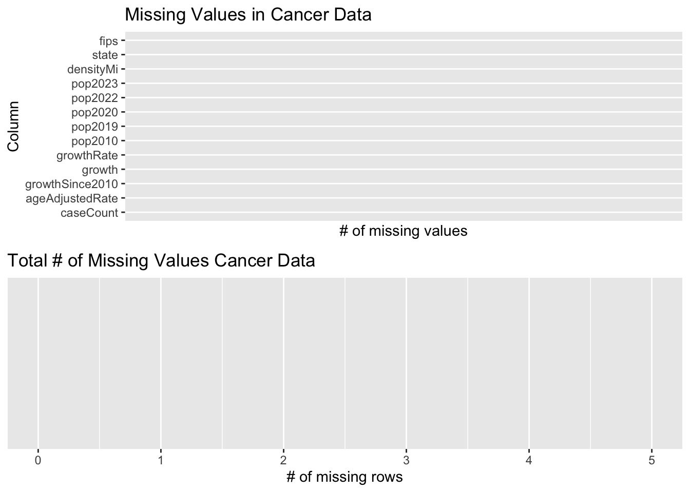
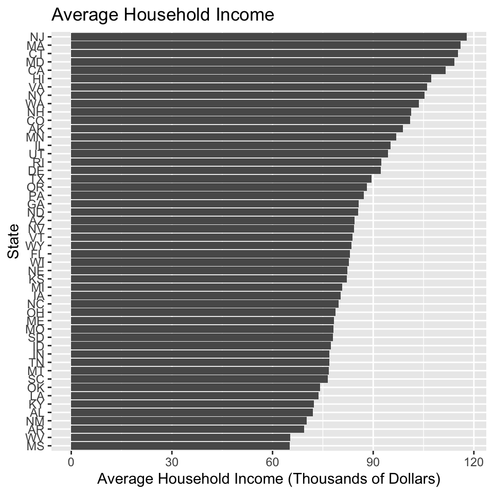
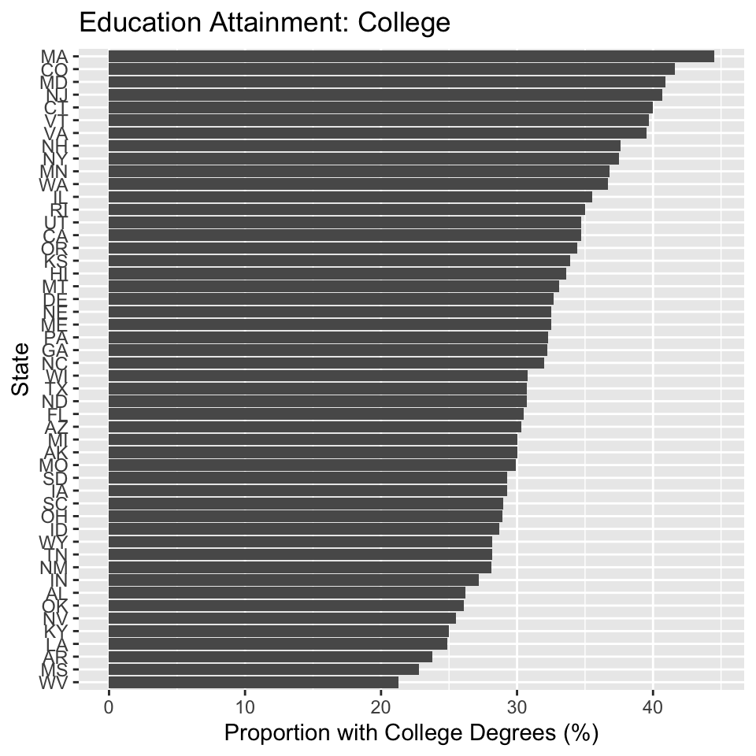
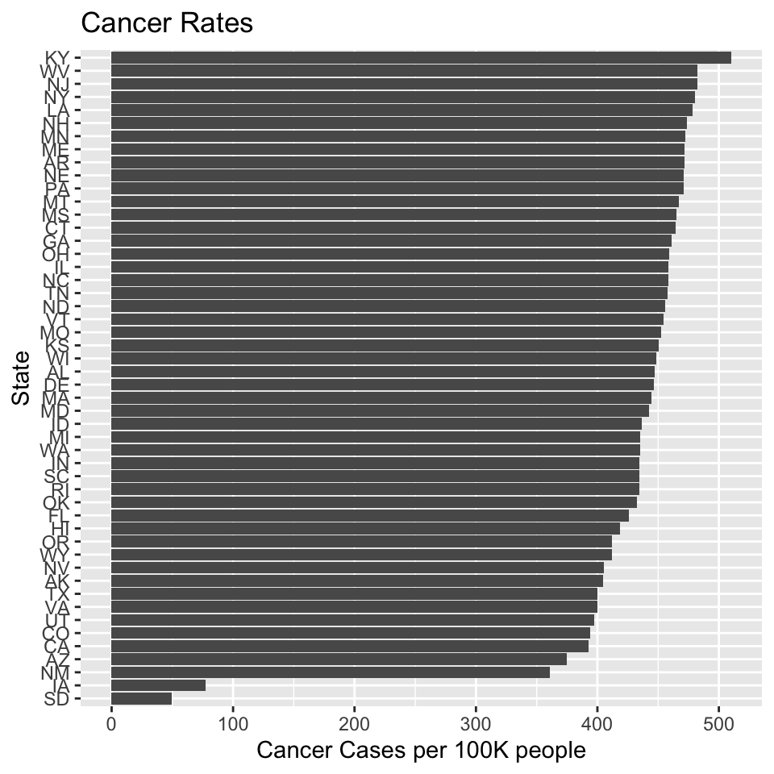
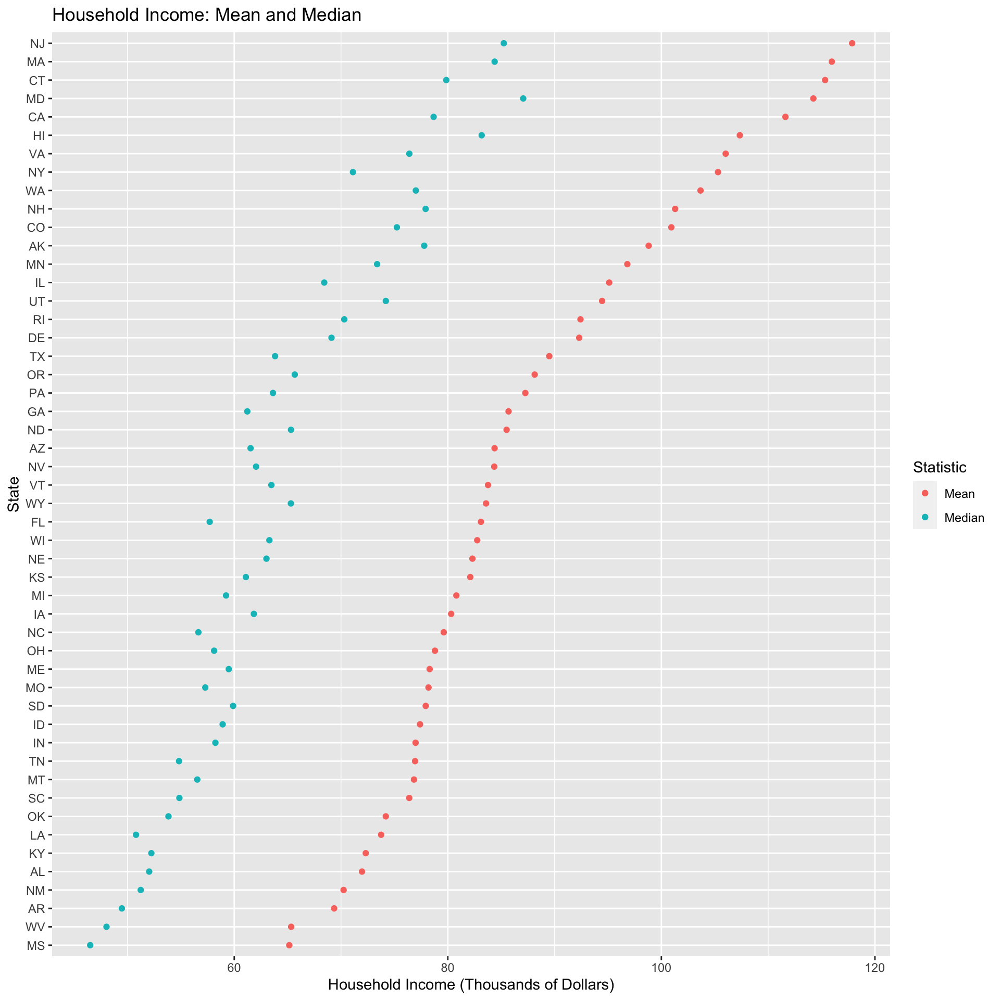

Chapter 7 Extraneous graphs
These are some graphs we considered, but ultimately did not decide to have, since they do not best contribute to the overall story. While these graphs do show the distribution data of each variable, we are more interested in analyzing each region geographically with respect to each variable.
Income (Average and Median):

Education (percentage with high school or college degrees):


Smoking:
Cancer: 
Let’s look at the distribution of each of the indicators:
Income (Average and Median):

We can see that the mean and median have very similar distributions, with the mean being higher than the median (since we have a few outliers in each state that are extremely rich).
Education (proportion with high school or college degrees):

We see here way more people get their high school diplomas than college diplomas, since fewer people can afford to go to college compared to high school. The distributions themselves, however, do not look very similar to each other.
We can plot two separate Cleveland dot plots for High School and College, taking the top 5 and bottom 5:


Smoking: 
Cancer: 
We see that the Kentucky and West Virginia have the highest smoking and cancer rates. This is understandable, since we see that WV and KY are last and fourth-to-last in college education rates.